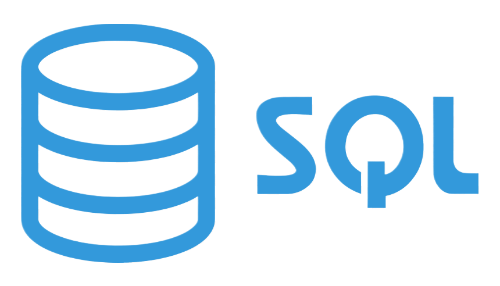
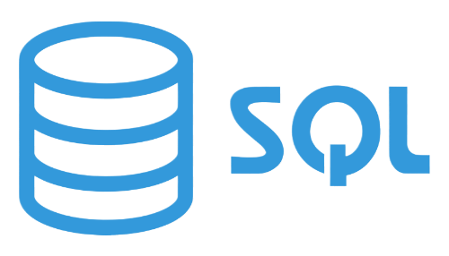

Automation
Automation Framework & Reliability
Framework Java + Selenium/TestNG dan Katalon siap pakai untuk regression paralel.
QA Engineer yang bersemangat dengan keahlian dalam pengujian manual dan otomatisasi. Berdedikasi untuk memastikan kualitas perangkat lunak melalui strategi pengujian yang komprehensif dan solusi otomatisasi yang inovatif.

Proyek pengujian API komprehensif menggunakan Postman untuk menguji endpoint REST API dan validasi database untuk memastikan integritas data. Proyek ini mencakup pengujian berbagai metode HTTP (GET, POST, PUT, DELETE), validasi kode respons, validasi skema, dan pengujian operasi database. Menerapkan praktik terbaik untuk pengujian API termasuk variabel lingkungan, kumpulan pengujian, dan skrip pengujian otomatis.
Selama tahap integrasi API pada proyek Sport Activity, ditemukan beberapa kendala yang mempengaruhi kualitas dan keandalan sistem backend.
Beberapa endpoint API menunjukkan:
Masalah ini berpotensi menyebabkan:
Untuk mengatasi permasalahan tersebut, dilakukan proses manual API testing secara menyeluruh menggunakan Postman dengan pendekatan positive & negative testing.
Langkah-langkah pengujian mencakup:
Semua pengujian dilakukan dalam Postman Collection yang disusun modular per endpoint, disertai pre-request script dan environment variable untuk efisiensi pengujian.
Hasil pengujian menunjukkan:
Bug utama yang ditemukan meliputi:
Framework Java + Selenium/TestNG dan Katalon siap pakai untuk regression paralel.
Traceability matrix dan exploratory session menjaga visibilitas risiko produk.


Postman modular + REST Assured memverifikasi endpoint dan sinkronisasi data SQL.
 

Dashboard Jira, repositori Git, dan dokumentasi QA memastikan tim selaras.


"Saya percaya bahwa kemampuan beradaptasi sangat penting di era digital ini. Saya menerima perubahan, belajar dengan cepat, dan memandang QA sebagai alat kolaboratif untuk meningkatkan kualitas perangkat lunak. Dengan menggabungkan kreativitas dan teknologi, kita dapat menciptakan solusi yang bermakna."